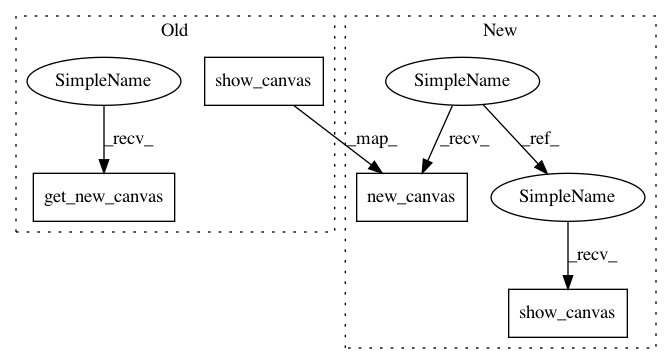

e0d48a0558f12cc6b206c6235c4c432f6c88bd07,GPy/plotting/gpy_plot/latent_plots.py,,plot_latent_inducing,#Any#Any#Any#Any#Any#Any#Any#,105
Before Change
if "color" not in kwargs:
kwargs["color"] = "white"
canvas, kwargs = pl.get_new_canvas(projection=projection, **kwargs)
Z = self.Z.values
labels = np.array(["inducing"] * Z.shape[0])
scatters = _plot_latent_scatter(canvas, Z, sig_dims, labels, marker, num_samples, projection=projection, **kwargs)
if projection == "3d":
return pl.show_canvas(canvas, dict(scatter=scatters), legend=legend,
xlabel="latent dimension %i" % input_1,
ylabel="latent dimension %i" % input_2,
zlabel="latent dimension %i" % input_3)
else:
return pl.show_canvas(canvas, dict(scatter=scatters), legend=legend,
xlabel="latent dimension %i" % input_1,
ylabel="latent dimension %i" % input_2,
After Change
if "color" not in kwargs:
kwargs["color"] = "white"
canvas, kwargs = pl.new_canvas(projection=projection,
xlabel="latent dimension %i" % input_1,
ylabel="latent dimension %i" % input_2,
zlabel="latent dimension %i" % input_3, **kwargs)
Z = self.Z.values
labels = np.array(["inducing"] * Z.shape[0])
scatters = _plot_latent_scatter(canvas, Z, sig_dims, labels, marker, num_samples, projection=projection, **kwargs)
return pl.show_canvas(canvas, dict(scatter=scatters), legend=legend)
def _plot_magnification(self, canvas, which_indices, Xgrid,
xmin, xmax, resolution, updates,
mean=True, covariance=True,
In pattern: SUPERPATTERN
Frequency: 3
Non-data size: 4
Instances
Project Name: SheffieldML/GPy
Commit Name: e0d48a0558f12cc6b206c6235c4c432f6c88bd07
Time: 2015-10-07
Author: ibinbei@gmail.com
File Name: GPy/plotting/gpy_plot/latent_plots.py
Class Name:
Method Name: plot_latent_inducing
Project Name: SheffieldML/GPy
Commit Name: e0d48a0558f12cc6b206c6235c4c432f6c88bd07
Time: 2015-10-07
Author: ibinbei@gmail.com
File Name: GPy/plotting/gpy_plot/latent_plots.py
Class Name:
Method Name: plot_latent_scatter
Project Name: SheffieldML/GPy
Commit Name: e0d48a0558f12cc6b206c6235c4c432f6c88bd07
Time: 2015-10-07
Author: ibinbei@gmail.com
File Name: GPy/plotting/gpy_plot/latent_plots.py
Class Name:
Method Name: plot_steepest_gradient_map